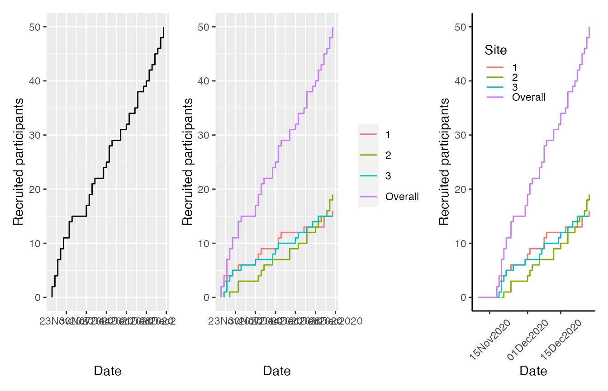
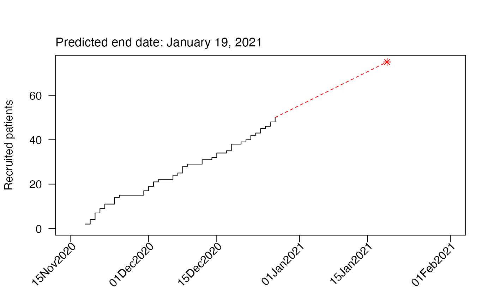

accrualPlot.RmdFollowing a trials recruitment is an important task for timing of analyses and ensuring that a trial will not run for too long (longer trials are more expensive). accrualPlot provides tools for easily creating recruitment plots and even for predicting when a trial will have successfully recruited all participants.
The package is loaded like any other:
library(accrualPlot)
#> Loading required package: lubridate
#>
#> Attaching package: 'lubridate'
#> The following objects are masked from 'package:base':
#>
#> date, intersect, setdiff, unionaccrual_df
To work with accrualPlot, we need some data, specifically dates and, optionally, site identifiers. Here’s some data that we will use in the following examples.
set.seed(1234)
x <- as.Date("2020-12-07") + sample(c(-20:20), 50, replace = TRUE)
site <- sample(1:3, 50, replace = TRUE)accrual_dfs are simply dataframes with the number of participants on each day participants are recruited (or site) began recruiting.
Monocentric trials obviously have only a single site, so we only need the x object we just created. We can pass this into the accrual_create_df function.
df <- accrual_create_df(x)
head(df)
#> Date Freq Cumulative
#> 1 2020-11-18 0 0
#> 2 2020-11-18 2 2
#> 3 2020-11-19 2 4
#> 4 2020-11-20 3 7
#> 5 2020-11-21 2 9
#> 6 2020-11-22 2 11In this case, the accrual_df has a single data frame.
For multicentric trials, we should also pass the site identifier to accrual_create_df in the by argument.
df2 <- accrual_create_df(x, by = site)
lapply(df2, head)
#> $`1`
#> Date Freq Cumulative
#> 1 2020-11-18 0 0
#> 2 2020-11-18 2 2
#> 3 2020-11-19 1 3
#> 4 2020-11-20 1 4
#> 5 2020-11-22 1 5
#> 6 2020-11-24 1 6
#>
#> $`2`
#> Date Freq Cumulative
#> 1 2020-11-21 0 0
#> 2 2020-11-21 1 1
#> 3 2020-11-24 2 3
#> 4 2020-12-01 1 4
#> 5 2020-12-02 1 5
#> 6 2020-12-03 1 6
#>
#> $`3`
#> Date Freq Cumulative
#> 1 2020-11-19 0 0
#> 2 2020-11-19 1 1
#> 3 2020-11-20 2 3
#> 4 2020-11-21 1 4
#> 5 2020-11-22 1 5
#> 6 2020-11-25 1 6
#>
#> $Overall
#> Date Freq Cumulative
#> 1 2020-11-18 0 0
#> 2 2020-11-18 2 2
#> 3 2020-11-19 2 4
#> 4 2020-11-20 3 7
#> 5 2020-11-21 2 9
#> 6 2020-11-22 2 11In this case, the accrual_df is a list of dataframes, one for each site and an overall
By default, the start and end dates are defined based on the dates that you pass to accrual_create_df. You can override these via the start_date and current_date arguments. This is useful for when you have particularly slow recruiting trials (such as those with particularly strict inclusion criteria). For example, our fictitious example trial might have started recruiting on the 1st November. By adding this information, we modify other output
df3 <- accrual_create_df(x, start_date = as.Date("2020-11-01"))For multicentric trials where different sites started recruiting at different times, we can pass a vector to start_date
df4 <- accrual_create_df(x, by = site, start_date = as.Date(c("2020-11-10", "2020-11-20", "2020-11-18")))accrualPlot has three flavours of plots:
* Cumulative
* Absolute
* Prediction
Cumulative plots show a standard step function of the number of participants recruited up to a given point in time. The plots are produced via the plot method (which is a wrapper for the internal function accrual_plot_cum)
Recruitment plots per unit time can be obtained via the absolute method (specify which = "absolute" to plot)
par(mfrow = c(1, 3))
plot(df, which = "abs", unit = "day")
plot(df2, which = "abs", unit = "day")
plot(df4, which = "abs", unit = "day")
Options for unit are year, month, week and day.
Where multiple sites exist, the different sites are indicated by different colours on the stacked bars.
It is also possible to predict the time point at which a certain number of participants has been recruited (for estimating when a study will be complete). If we want to recruit a total of 75 participants, we can put that in the target option.
plot(df, which = "predict", target = 75)
Tables of recruitment can also be generated using accrualPlot, via the summary method. As with absolute recruitment above, a unit of time can be specified.
# accrual_table(df)
summary(df, unit = "day")
#> start_date time n rate
#> First participant in Days accruing Participants accrued Accrual rate (per day)
#> 18Nov2020 39 50 1.28
summary(df2, unit = "day")
#> name start_date time n
#> Center First participant in Days accruing Participants accrued
#> 1 18Nov2020 39 16
#> 2 21Nov2020 36 19
#> 3 19Nov2020 38 15
#> Overall 18Nov2020 39 50
#> rate
#> Accrual rate (per day)
#> 0.41
#> 0.53
#> 0.39
#> 1.28
summary(df3, unit = "day")
#> start_date time n rate
#> First participant in Days accruing Participants accrued Accrual rate (per day)
#> 18Nov2020 39 50 1.28
summary(df3, unit = "day", header = FALSE)
#> start_date time n rate
#> 18Nov2020 39 50 1.28